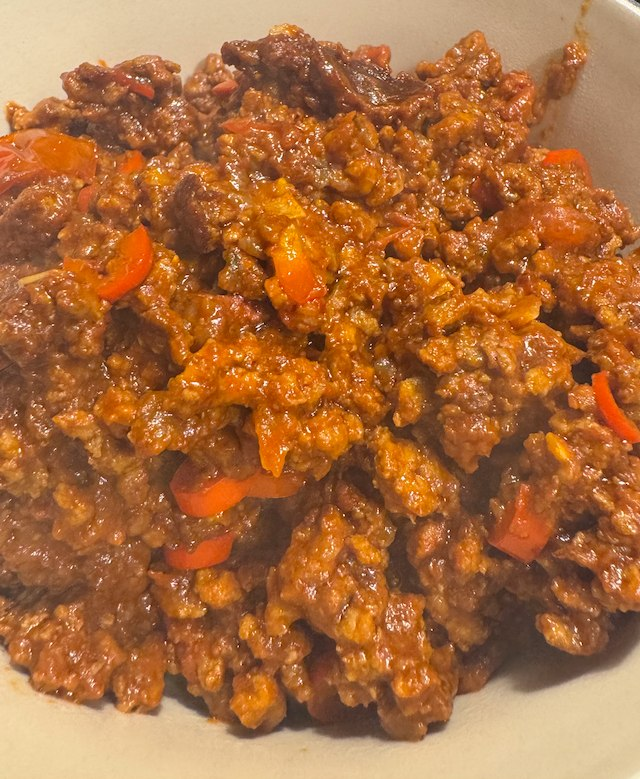

Quick Chilli

Serves: 4
Cook Time: 20 min
From Bite-Sized Mexican
Ingredients
- 500g beef mince
- 2 red chillies, seeded and chopped
- 2 garlic cloves, minced
- ½ tsp ground cumin
- 125g tomatoe puree (that's a whole tube)
- 1 beef stock pot
- 1 tbsp red wine vinegar
- 2 tomatoes, chopped
Method
Heat frying pan to hot. Add beef in blobs. Turn heat to low, break up, and let it cook through, 5 min.
Add chillies, garlic, cumin and tomato puree, and cook for 2-3 min.
Add stock pot, 175 ml water, vinegar. Cook for 10-15 min, till reduced.